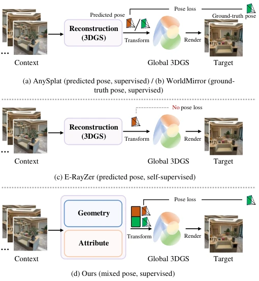
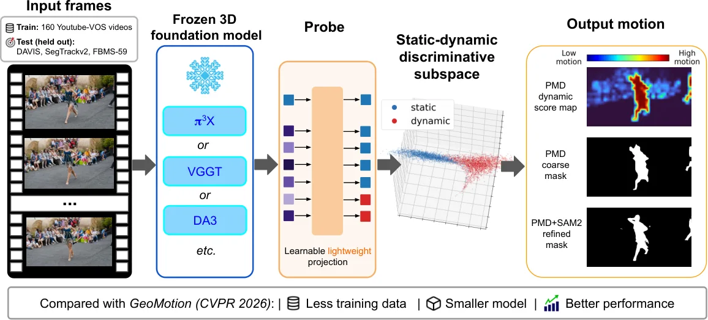
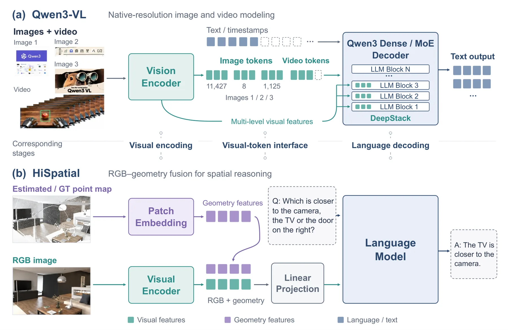

新论文 · 日期 2026-10-26 · score 21 · S层 · Geometry Foundation Models / 3D Foundation Models · cs.CV
内容级别：完整单篇海报
作者：Xiaohan Lu, Jiaqi Zhang, Weijia Jiang, Siwei Ma
评分 20/10
无位姿前馈 3DGS位姿不确定性可微 bundle adjustment双路训练点图校正DL3DV
一句话工作总结：把「位姿误差污染高斯属性」拆成两个分支加双路训练来治：DL3DV 24 视角无位姿设定 PSNR 23.190（YoNoSplat 22.433、AnySplat 19.914），AUC@5 0.849（WorldMirror 0.792）；只用预测位姿训练反而掉到 21.155，说明关键不是「多用预测位姿」而是「用在哪条分支上」。
无位姿前馈 3D 高斯泼溅（3DGS）能直接从一组未标定图像回归高斯表示，但残余位姿误差会扰动「相机系 → 规范系」的高斯变换，给几何与属性学习注入噪声监督。SG-Splat 把几何/相机估计与高斯属性预测拆成两个分支，减少误差耦合；再用由粗到细的两步精化：流光引导位姿精化（FGPR）用相关特征与可微 bundle adjustment 迭代修正位姿并输出深度残差，残差引导几何校正（RGC）用该残差以有界乘性修正量…
3D Gaussian Splatting (3DGS) has become a promising representation for real-time novel view synthesis and 3D scene reconstruction. For practical deployment, recent studies have explored pose-free feed-forward…

新论文 · 日期 2026-10-25 · score 14 · S层 · Geometry Foundation Models / 3D Foundation Models · cs.CV, cs.AI, cs.LG
内容级别：完整单篇海报
作者：Xiaoang Zhang, Mert Kiray, Yordanka Velikova, Manoj Biswanath
评分 18/10
3D 基础模型探针运动分割低秩二次探针视觉几何骨干零样本迁移静态/动态分离
一句话工作总结：运动理解不是「要再训一个大解码器」，而是「冻结 token 里已有、只差一个低秩二次读出」：π³X 上 rank-8 探针仅 0.295M 参数，DAVIS17 粗掩码 J-M 73.7（GeoMotion 75.4），加 SAM2 后 81.9/92.3（GeoMotion+SAM2 81.1/92.6），训练数据只有 160 个视频、推理只加 4.2 ms/帧。
前馈 3D 基础模型重塑了多视图重建，但动态 4D 理解仍依赖大规模运动监督或针对具体架构手工设计的启发式。本文问：冻结的 3D 基础模型 token 里是否already 编码了运动相关信息、只是缺少轻量读出函数？在三个骨干上做线性探针，作者发现静态/动态可分性确实可从冻结表示中解码；在 π³X 上的秩受限与谱分析进一步显示，恢复出的运动线索集中在一个低维子空间。据此提出基于探针的运动蒸馏（PMD）：把「与固定锚…
Feed-forward 3D foundation models have recently reshaped multi-view reconstruction, yet dynamic 4D understanding still often relies on large-scale motion supervision or hand-crafted, architecture-specific heur…

新论文 · 日期 2026-10-27 · score 10 · S层 · Geometry Foundation Models / 3D Foundation Models · cs.CV
内容级别：完整单篇海报
作者：Muyeol Sung, Jangwon Kim, Jongwoo Lim
评分 17/10
VGGT 加速token merging注意力质量修正免训练长序列几何WACV 2027
一句话工作总结：先诊断出旧加速法的三处误差来源（合并 query、丢掉 log s 的注意力质量修正、早期块过早去掉跨帧上下文），再逐一补回：CO3D 严格指标 AUC@3 56.94（vanilla VGGT 57.49，FastVGGT 41.56），200 帧 33.65 s vs 86.78 s（2.58×），显存与 vanilla 只差 0.01 GiB。
VGGT 这类前馈几何模型能在一次前向里从 1 到数百视图恢复相机参数、深度与点图，但其全局注意力的复杂度随帧数平方增长，长序列上主导端到端时延。此前的免训练加速（如 token merging）会掉精度，难以真正替代 VGGT。GPA-VGGT 把早期块的全局注意力换成「帧注意力 + 共享跨帧 K/V 集」，在其余块里只合并 key/value、保留全部 query，并给被合并的 key 补上 log s 的注意…
Feed-forward geometry models such as VGGT recover camera parameters, depth maps, and point maps from one to hundreds of views in a single forward pass, making them powerful backbones for multi-view 3D percepti…

新论文 · 日期 2026-10-27 · score 10 · A层 · Embodied Navigation / VLN / Spatial Reasoning · cs.CV
内容级别：半海报
作者：Yu Zhang, Xiaogang Wang, Yuhang Cheng, Jingrui Li
评分 9/10
3D 空间问答HiSpatialQwen3-VLQLoRA单目点图混合域微调
一句话工作总结：两条可复现的适配流水线：HiSpatial-3B 目标集 1.73%→79.89%（3,600 步），风格化集 14.9%→55.1%；Qwen3-VL-8B 20.74%→45.27%、32B 30.79%→47.60%。价值在工程链路与「混合域数据比例」这一经验，不在方法创新；数据集未公开、无逐任务拆分与方差，引用需谨慎。
这是一份工程报告，交付两条面向 3D 感知视觉问答的端到端多模态适配流水线，跑在自建空间数据集上。第一条微调 HiSpatial-3B，在 RGB 之外注入度量尺度点图；第二条用 QLoRA 适配 Qwen3-VL。完整栈覆盖数据转换、图文对齐、单目几何预处理、指令构造、混合域训练、检查点管理、批量推理与自动评测。目标基准上 HiSpatial 从 1.73% 提到 79.89%（3,600 步），另一批风格化数据…
This report presents the implementation and validation of two end-to-end multimodal adaptation pipelines for 3D-aware visual question answering on a custom spatial dataset. The first pipeline fine-tunes HiSpat…

新论文 · 日期 2026-10-27 · score 6 · A层 · Robust State Estimation / Uncertainty · cs.CV, cs.LG
内容级别：半海报
作者：Adityan Thirumani Srinivasan, David Nordström
评分 15/10
位姿不确定性线性探针失效预测选择性预测VGGT几何基础模型可信度
一句话工作总结：VGGT 不报位姿不确定性，但它的冻结特征里有一个几乎免费的失败信号：一个线性探针 ROC-AUC 93.5%（自带置信度 79.7%），按探针保留最可信的 50% 图像对，失败率从 34.9% 降到 3.8%；代价是需要失败标签训练探针，且它抓不到短基线的平移失败。
VGGT 这类前馈重建模型在一次前向里回归相机与几何，却不为预测的相机位姿报告任何不确定性：错误的相对位姿与正确的看起来一样。本文问：冻结的模型是否仍「知道」自己的位姿是错的？在 HardMatch（1,000 对刻意困难的图像对，VGGT 在其中 35% 上失败）上，对冻结特征做线性探针可在未见类别上以 ROC-AUC 93.5% 预测位姿失败，而 VGGT 自带的点图置信度只有 79.7%、用其全部输出训练的分…
Feed-forward 3D reconstruction models such as VGGT regress cameras and geometry in a single forward pass, but they report no uncertainty for the camera poses they predict: an incorrect relative pose looks no d…